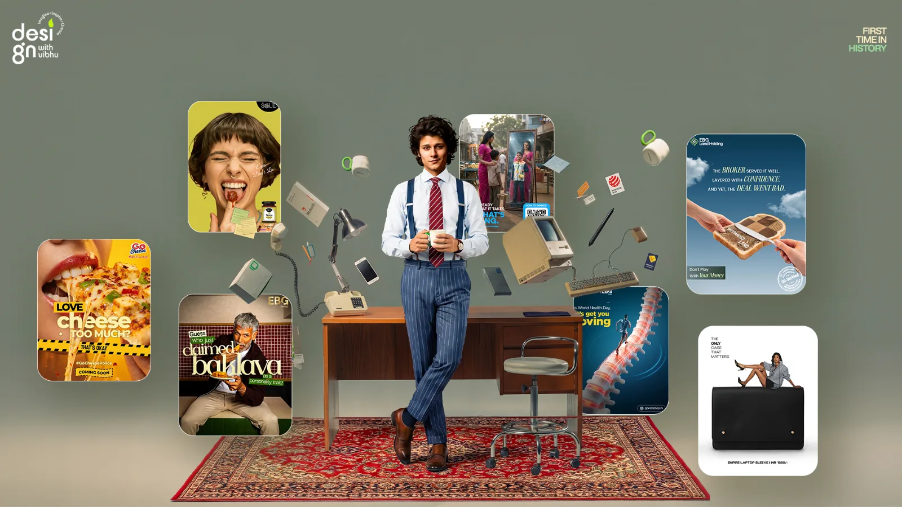
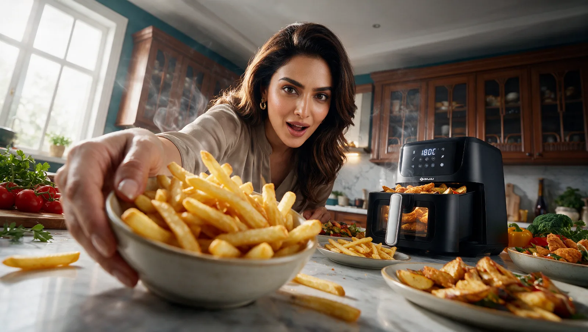
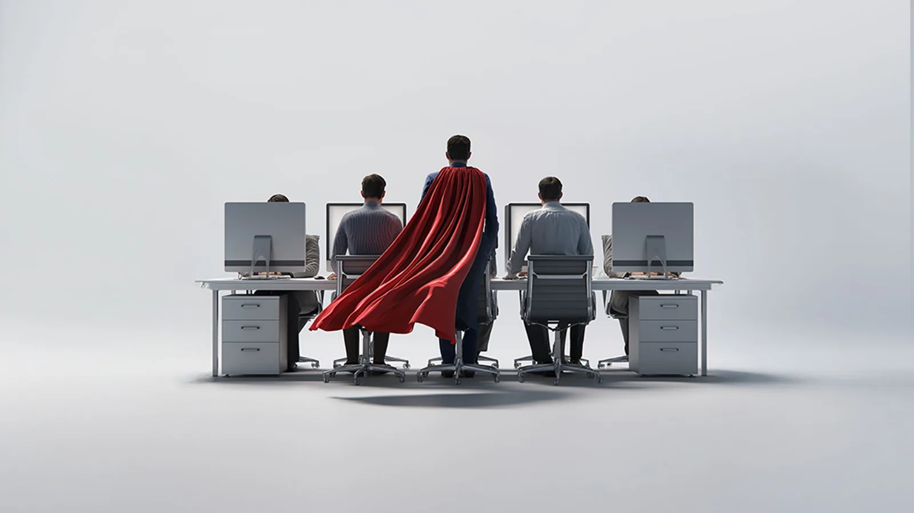
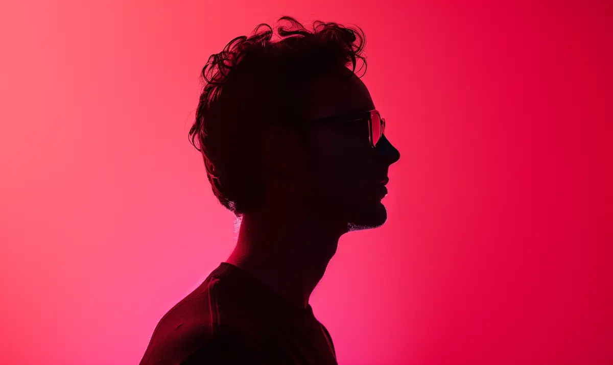
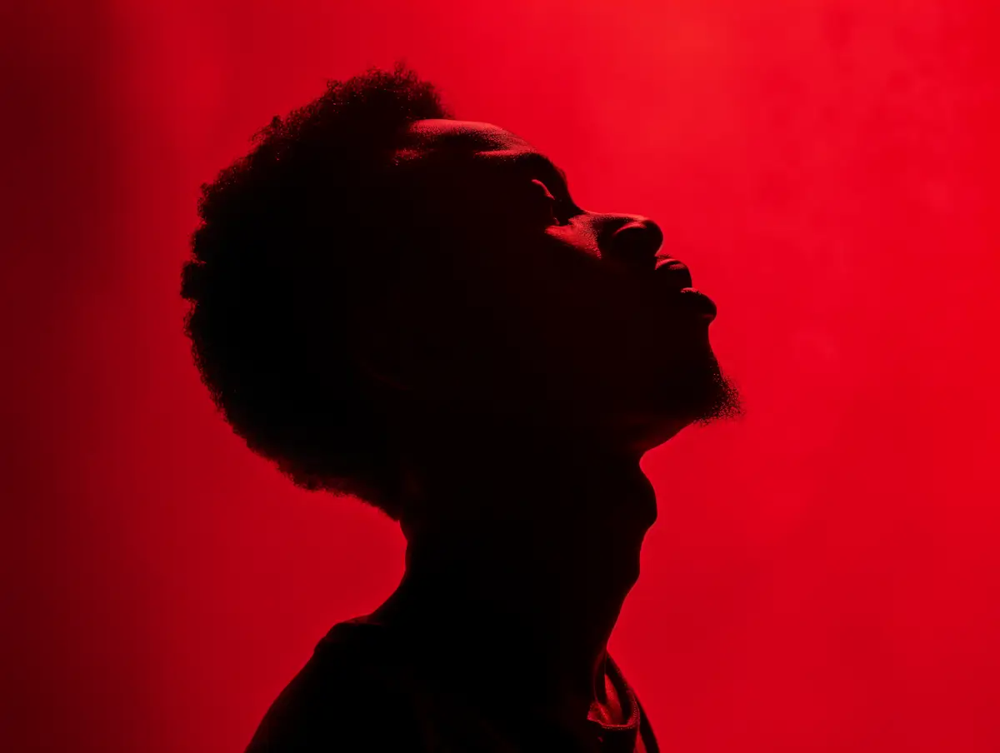
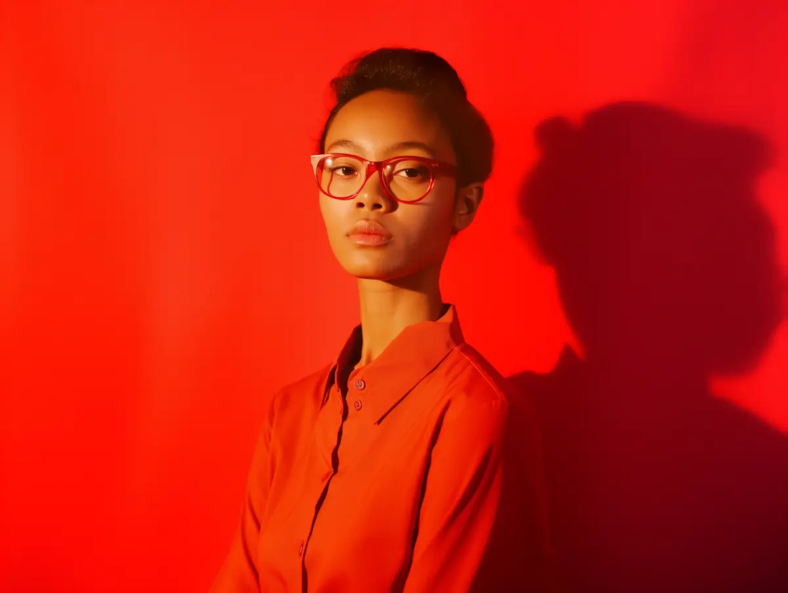
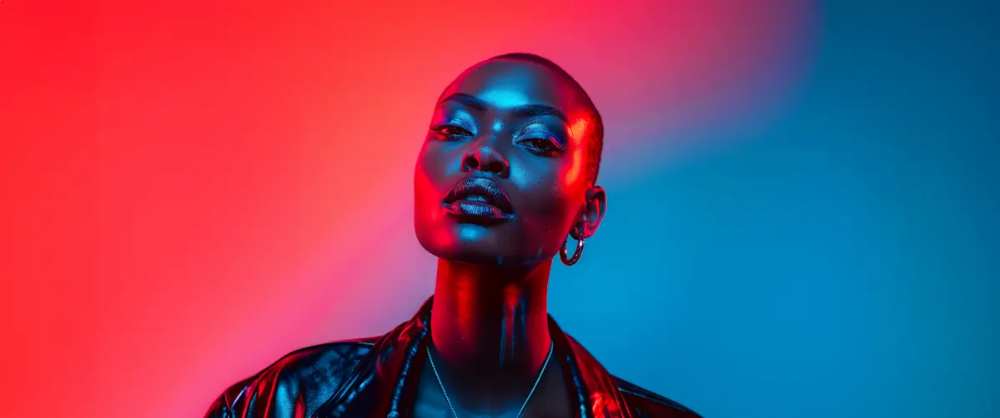
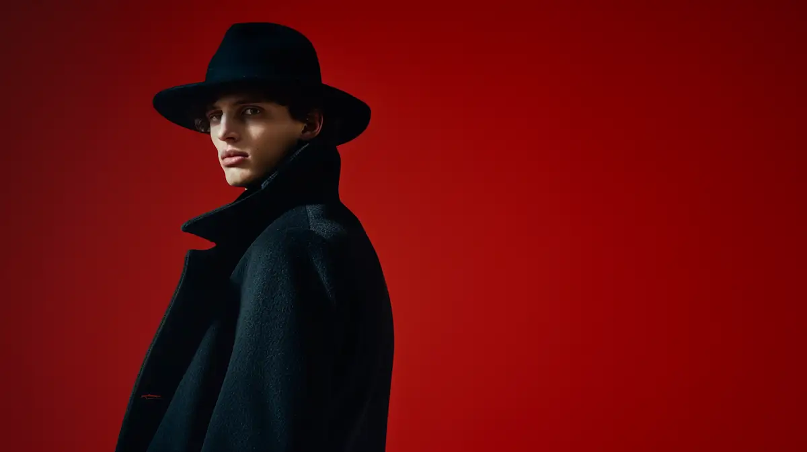
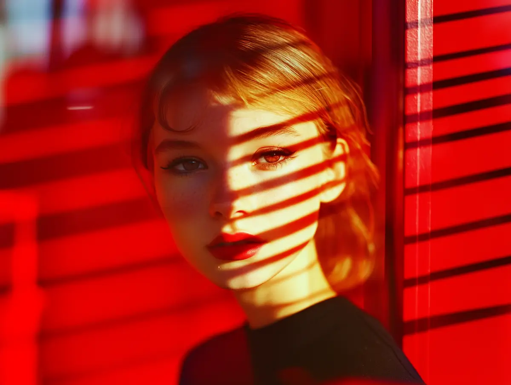
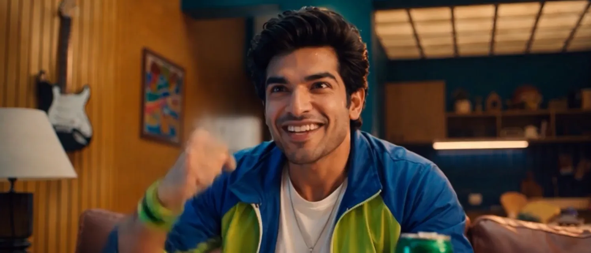

From zero to job-ready
- Google Classroom assignments
- Doubt live classes
- 320+ hours lectures
More than a design course, a complete system to help you become a designer.
Learn, practice, get feedback, improve your skills, and build a portfolio that represents your work.
Everything you need
to master design.
The curriculum

01 — Master the tools
Industry-standard tools ko fundamentals se advanced level tak master karo.
02 — Learn by doing
Sirf tutorials nahi — har week practice, submission, feedback aur improvement.

03 — Create with AI
Modern AI tools ko design workflow mein practically use karna seekho.
04 — Learn from the industry experts
Experienced designers aur creators se directly seekho aur industry ko samjho.

05 — Build your career
Design skills ko real-world projects, clients aur freelance opportunities mein convert karna seekho.
Work that speaks for itself







Real students, real wins
Become the hero
Join 5,000+ students learning design, building portfolios and getting paid for their creativity.